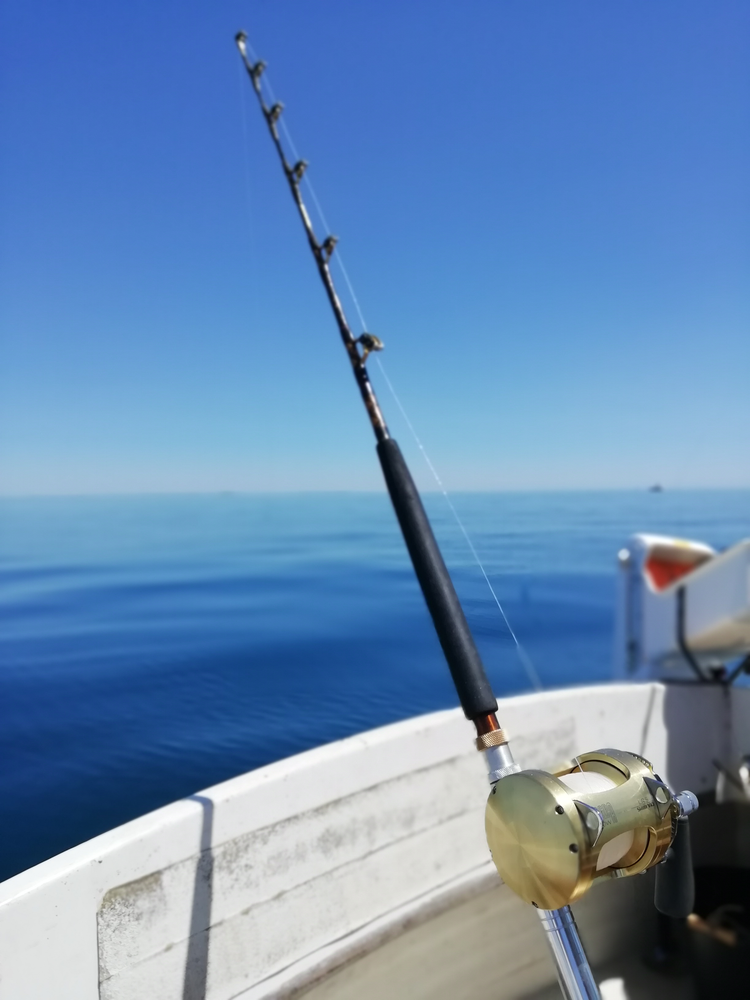
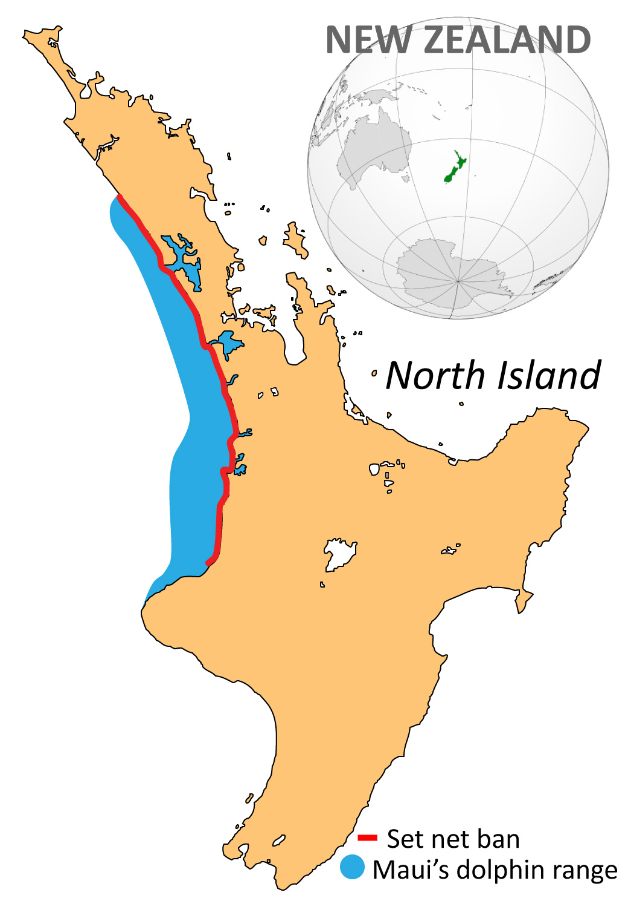

Māui Dolphins are the smallest type of Dolphins.

Photo by Gregory "Slobirdr" Smith; Creative Commons Attribution 2.0
Conservation Status:
- Nationally Critical (Critically endangered)
- Why?
- They are critically endangered mainly due to human-induced threats such as getting entangled in fishing nets due to set netting and trawling (these being the most common reasons for their death). This is even more of a threat due to their habitat overlapping with areas used for commercial fishing. Another reason for their extinction is due to a disease (Toxoplasmosis) which is a parasite spread by cats.
- If these conditions continue for the Māui dolphins, they are estimated to go potentially fo extinct by 2029.
- To limit such threats, the government has put some restrictions regarding commercial and recreational fishing in thier habitat. Moreover, the government has added a rule for mandatory on-board cameras on fishing boats.

Photo by Tanguy Carpaye-Taïlamée; Creative Commons Attribution 4.0
Other Information:
- Population: Estimated around 54 over the age of 1
- Lifespan: mid-20s (shorter than most other dolphins)
- Scientific Name: Mangifera
- Habitat:The place you are most likely to spot these special dolphins is along the coast between Kaipara Harbour and Raglan. However, sighting one of these dolphins is quite rare due to their dropping population.

Photo by Rudolph89; Public Domain